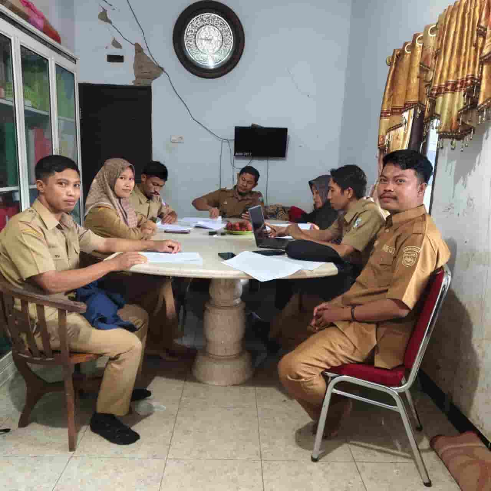
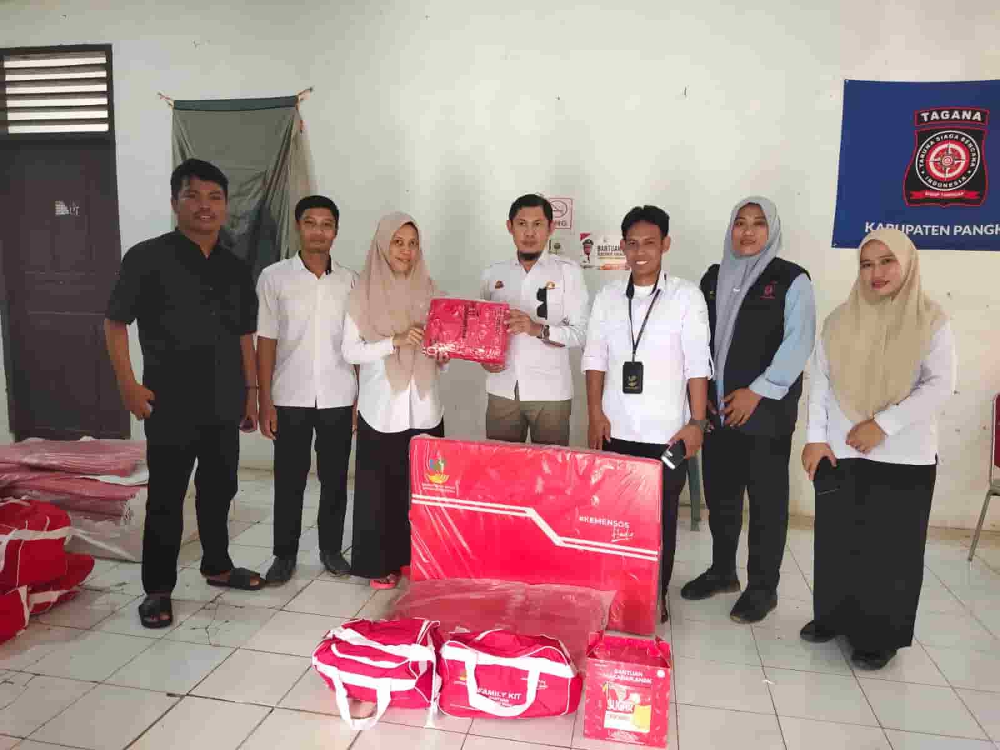

Kabar Terbaru Desa

Pemerintahan
Optimalkan Pelayanan 2026, Pemdes Balo Baloang Gelar Rakor Perdana
Kepala Desa Bohari, S.Pd memimpin rapat koordinasi perdana tahun 2026 bersama jajaran perangkat desa di Sekretariat Daratan Pangkep.

Sosial
Respon Cepat Abrasi Pulau Sumanga, Pemdes Balo Baloang Salurkan Bantuan Dinsos
Pemerintah Desa Balo Baloang menyalurkan bantuan logistik untuk warga terdampak abrasi akibat pengikisan ombak di Pulau Sumanga.